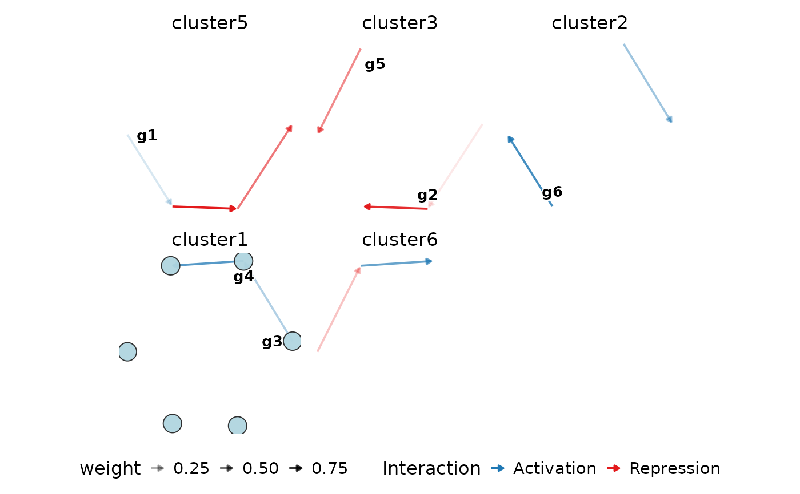
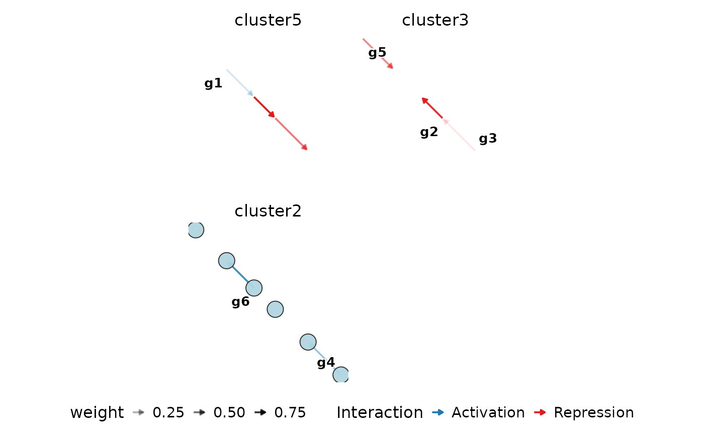

Plot dynamic networks
Usage
plot_dynamic_networks(object, ...)
# S4 method for class 'Seurat'
plot_dynamic_networks(
object,
network = NULL,
celltypes = NULL,
weight_cutoff = NULL,
celltypes_order = NULL,
ntop = 10,
filter_by_ntop = TRUE,
...
)
# S4 method for class 'CSNObject'
plot_dynamic_networks(object, ...)
# S4 method for class 'data.frame'
plot_dynamic_networks(
object,
celltypes_order = NULL,
ntop = 10,
filter_by_ntop = TRUE,
title = NULL,
theme_use = "theme_this",
theme_type = NULL,
plot_type = "ggplot",
layout = "anchor",
align_nodes = TRUE,
cols = NULL,
palette = "Chinese",
palcolor = NULL,
regulator_color = NULL,
target_color = NULL,
aspect.ratio = 1,
aspect_ratio = NULL,
label.size = 3.5,
label.fg = "black",
label.bg = "white",
label.bg.r = 0.12,
nrow = 2,
ncol = NULL,
byrow = TRUE,
combine = TRUE,
figure_save = FALSE,
figure_name = NULL,
figure_width = 6,
figure_height = 6,
seed = 1
)Arguments
- object
Data.frame with columns regulator, target, weight, celltype.
- ...
Arguments passed to methods.
- network
Name of the network; default uses
DefaultNetwork(object).- celltypes
Character vector of states/cell types;
NULLfor all.- weight_cutoff
Numeric threshold for edge weight filtering.
- celltypes_order
The order of cell types.
- ntop
The number of top regulators to show (labels and edge filtering). When
filter_by_ntop=TRUE, only edges from topntopregulators are plotted to avoid huge networks. Default is `10`.- filter_by_ntop
Logical. If
TRUE(default), filter edges to topntopregulators per celltype.- title
The title of figure. Default is `NULL`.
- theme_use
Theme function name or choice:
"theme_this","theme_blank", or"theme_void". Default is"theme_this".- theme_type
Legacy theme choice:
"theme_void","theme_blank", or"theme_facet".- plot_type
The type of figure. Could be `"ggplot"`, `"animate"`, or `"ggplotly"`. Default is `"ggplot"`.
- layout
The layout of figure. Could be `"anchor"` (temporally aligned coordinates across states), `"fruchtermanreingold"` or `"kamadakawai"`. Default is `"anchor"`.
- align_nodes
Logical. If
TRUE(default), anchor node positions across all states based on the union graph to ensure temporal coherence and avoid jumping nodes.- cols
Optional named color vector for Interaction (
ActivationandRepression). Default isc("Activation" = "#1F78B4", "Repression" = "#E31A1C").- palette
Palette name used by
thisplot::palette_colors(). Default is"Chinese".- palcolor
Optional named color vector overriding default node colors.
- regulator_color
Fill color for regulator nodes. Default is
NULL(resolved viapalette).- target_color
Fill color for target nodes. Default is
NULL(resolved viapalette).- aspect.ratio
Numeric aspect ratio for panels. Default is
1.- aspect_ratio
Alias for
aspect.ratio.- label.size
Label text size. Default is
3.5.- label.fg
Label foreground text color. Default is
"black".- label.bg
Label outline/background color. Default is
"white".- label.bg.r
Label outline radius. Default is
0.12.- nrow
The number of rows of figure (for
facet_wrapwhencombine=TRUE). Default is `2`.- ncol
Integer or
NULL. Number of columns forfacet_wrap.- byrow
Logical. If
TRUE, fill facets by row (as.table=TRUEinfacet_wrap).- combine
Logical. If
TRUE(default), return a single faceted plot; ifFALSE, return a named list of plots per celltype.- figure_save
Whether to save the figure file. Default is `FALSE`.
- figure_name
The name of figure file. Default is `NULL`.
- figure_width
The width of figure. Default is `6`.
- figure_height
The height of figure. Default is `6`.
- seed
The seed random use to plot network. Default is `1`.
Examples
data(example_matrix, package = "inferCSN")
network <- inferCSN::inferCSN(example_matrix, verbose = FALSE)
network$celltype <- rep(
c("cluster5", "cluster3", "cluster2", "cluster1", "cluster6"),
length.out = nrow(network)
)
celltypes_order <- c(
"cluster5", "cluster3",
"cluster2", "cluster1",
"cluster6"
)
plot_dynamic_networks(
network,
celltypes_order = celltypes_order
)

plot_dynamic_networks(
network,
celltypes_order = celltypes_order[1:3]
)

plot_dynamic_networks(
network,
celltypes_order = celltypes_order,
plot_type = "ggplotly"
)
#> Warning: geom_GeomTextRepel() has yet to be implemented in plotly.
#> If you'd like to see this geom implemented,
#> Please open an issue with your example code at
#> https://github.com/ropensci/plotly/issues
#> Warning: geom_GeomTextRepel() has yet to be implemented in plotly.
#> If you'd like to see this geom implemented,
#> Please open an issue with your example code at
#> https://github.com/ropensci/plotly/issues
#> Warning: geom_GeomTextRepel() has yet to be implemented in plotly.
#> If you'd like to see this geom implemented,
#> Please open an issue with your example code at
#> https://github.com/ropensci/plotly/issues
#> Warning: geom_GeomTextRepel() has yet to be implemented in plotly.
#> If you'd like to see this geom implemented,
#> Please open an issue with your example code at
#> https://github.com/ropensci/plotly/issues
#> Warning: Aspect ratios aren't yet implemented, but you can manually set a suitable height/width
#> Warning: Aspect ratios aren't yet implemented, but you can manually set a suitable height/width
#> Warning: Aspect ratios aren't yet implemented, but you can manually set a suitable height/width
#> Warning: Aspect ratios aren't yet implemented, but you can manually set a suitable height/width
#> Warning: Aspect ratios aren't yet implemented, but you can manually set a suitable height/width
#> Warning: Aspect ratios aren't yet implemented, but you can manually set a suitable height/width
#> Warning: Aspect ratios aren't yet implemented, but you can manually set a suitable height/width
#> Warning: Aspect ratios aren't yet implemented, but you can manually set a suitable height/width
#> Warning: Aspect ratios aren't yet implemented, but you can manually set a suitable height/width
#> Warning: Aspect ratios aren't yet implemented, but you can manually set a suitable height/width